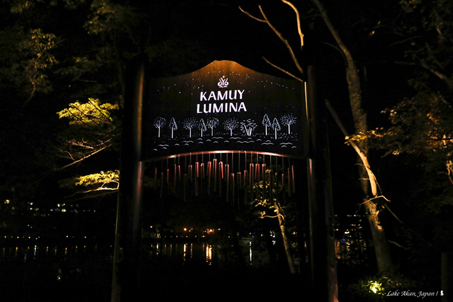

道東阿寒湖互動體驗表演 Kamuy Lumina 新登場
_科技 x 文化 x 自然 2019/11/8 _圖文 陳耀恩 Ean Chen 高浸入式體驗，可說是目前東西方大型表演在設計上的一大特色，從紐約的《Sleep No More》、去年來台北演出的《極限震撼+ FUERZA BRUTA》、王潮歌在甘肅製作的《又見敦煌》，以及在北海道阿寒湖全新推出的數位實境互動表演《Kamuy Lumina》，都不約而同去打破舞台與觀眾席的界限，不光是拉近觀眾欣賞，甚至也都邀請觀眾成為演出的一份子，讓表演，不再是你演我看，而是共同創造一場獨一無二的回憶。
不同於上述其他幾個演出都是室內，《Kamuy Lumina》的表演舞台是道東阿寒湖畔的森林，跟當地最迷人的溫泉風呂一樣，都是露天，水邊夜涼，看表演要全副武裝、還會授與一支高科技的「節奏權杖」，那是讓觀眾參與演出的重要道具。阿寒湖有長達幾個月的雪季，這讓露天演出的《Kamuy Lumina》受到嚴苛限制，因此這場戶外表演僅在 5 月底到 11 月中旬左右舉行，每年只有半年可買票觀賞，因此雖剛在七月甫登場，但馬上就要結束本年度的演出。
《Kamuy Lumina》的幕後設計公司是來自加拿大，他們已在全球十處設計了「Lumina Night walk」體驗表演，其中有四處在亞洲包括新加坡與日本，道東阿寒湖的是最新一個。投資金額高達 4.5 億日圓，是由當地的阿寒湖溫泉旅館公會及阿寒觀光協會城市發展推進機構等共同出資，為推動夏秋兩季觀光的手筆之大，令人吒舌與佩服其用心。
科技運用，是世界各地用來包裝文化推廣觀光的一大趨勢，科技要有溫度才能觸動人心，於是他們以當地原住民文化中的重要角色也就是村落守護神－貓頭鷹為故事主角，來訴說愛努族的故事。燈光與投影是構成該表演的最重要手法，因此得等到日落之後才能施展魔法。不得不讚嘆製作公司展現的精密投影技術，整場演出共約九個舞台，分佈在阿寒湖畔 1.2 公里的森林步道周邊，投影布幕有些是半透明的黑網、更多是在林間一根根的樹幹上，於是貓頭鷹立體的高踞在樹幹，而一群奔跑的鹿仿若真從眼前林間疾躍而過，可以想像那是透過多縝密的投影計算才能展現的如此自然。這是個走動式的觀賞體驗，節奏全由觀眾自己掌握，一般大約會是在 45-60 分鐘完成，若跟我一樣喜愛拍照、並享受在如夢似幻的光影世界中，想多停留也不會被催趕。而入場時領取的節奏權杖會帶你走進故事中，隨著走入不同舞台，權杖會變換顏色與播放音效或音樂，讓觀眾不自覺的融入情境中，甚至，在表演最後，站在大樹下的觀眾們，還得齊心隨節奏用力持權杖撞擊腳下土地，把消失的動物重新喚回森林裡生活，也由此帶出提醒人類需與自然和平共生的意涵。
這將是一次非常獨特的觀賞表演經驗，特別是當先進的高科技與原始的大自然相融合，買票進場的這晚，可能皓月當空也可能細雨濛濛，相信各自獲得的都會是獨一無二的體驗與回憶。不過需要提醒的是，因目前透過節奏權杖播放講述故事只有日語，若跟我一樣不熟悉日文，建議可以在表演前先參考官網http://www.kamuylumina.jp/tc/上的介紹，如此實際觀賞時能因了解而獲得更多感動。
《Kamuy Lumina 表演資訊》
官網：http://www.kamuylumina.jp/tc/
票價：
• 大人 (中學生以上) - 預售票價：2,700日圓；當日票價：3,000日圓
• 小孩 (小學生) - 預售票價：1,350日圓；當日票價：1,500日圓
開放時間：每年將會在五月底至十一月中旬進行，確切時間請以官網為準。期間每日的表演開始時間是日落
30 分鐘後，因此每天會有些許的差異。
談到互動，這也是近年的趨勢，隨著資訊傳播變成以「人」為單位，360度的擴散，許多人已經不喜歡單純當個觀賞者，新世代希望有意見、被重視或是參與改變，不只場佈，連視覺識別系統也慢慢轉變成「動態識別」(相關文章：品牌識別的下個趨勢：動態識別設計)，以符合現在的傳播趨勢。
身為品牌及傳播的一份子，我們不禁要去好好想想，下個十年我們該在什麼位置，現在該怎麼準備了！